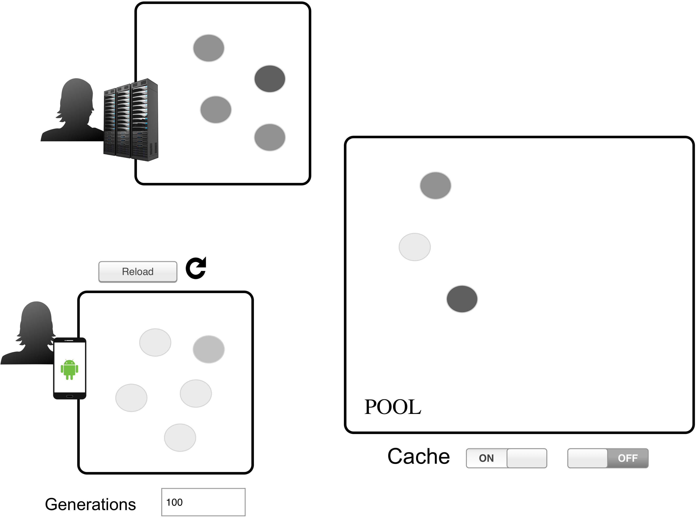
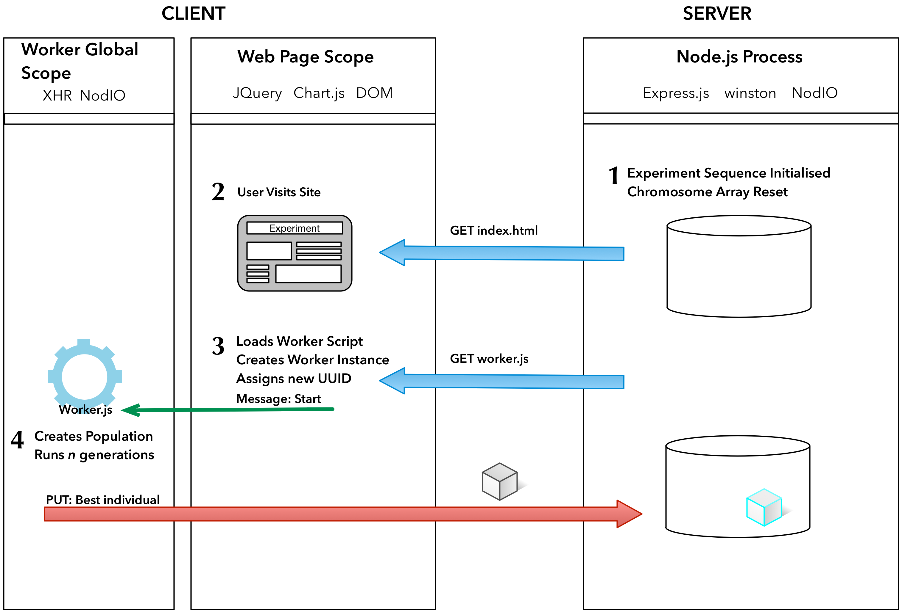

EvoSoft 2016
NodIO: a framework and architecture for pool-based evolutionary computation
Dept. of Computer Architecture and Technology and CITIC
University of Granada, Granada, Spain
Dept. of Graduate Studies
Instituto Tecnológico de Tijuana, Tijuana, México
We Need more Computing Power
Within a budget

JavaScript is not that slow now
In our experiments JavaScript was faster than compiled languages such as Scala, providing a performance comparable to other languages usually employed in evolutionary computation such as Python.
Runtime of 10,000 function evaluations for a complex benchmark function in several implementation languages.
In a slide
- We are presenting a JavaScript based framework for running distributed volunteer-based evolutionary algorithm experiments.
- We measured the speed of JavaScript in evolutionary algorithms.
- This can serve as a baseline for comparison with other distributed computing experiments.
The NodIO framework and API
The NodIO architecture has two tiers.
JSON data format is used for the communication between clients and the server
The REST Server
Stores two types of information:
- Information related to the evolutionary algorithm such as chromosomes.
- Information related to the performance and state of the experiments.
- It also performs logging duties.
The Client
A client that includes the evolutionary algorithm as JavaScript code embedded in a web page that displays graphs, some additional links, and information on the experiment.
This code runs an evolutionary algorithm island (in NodEO) starting with a random population...
 then it sends, every 100 generations, the best individual
back to the server (via a PUT request)
... and requests a random
individual from the server (via a GET request)
How different challenges of Volunteer-Based systems are adressed
- Scalability.
- Heterogeneous clients.
- Fault tolerance.
- Adaptiveness.
- Ease of use.
- Reasonable performance.
Improvements
- Restarting of the client once a solution has been found.
- Ability to randomly distribute the population size of islands.
- HTML5 Web Workers.
NodIO-WW
Advantages of the Web Worker API
- If the browser uses a tabbed document interface, the worker script keeps running in the background even in case the user brings forward another tabbed window.
- Several evolutionary algorithms can be executed in parallel in a single web page.
- Many implementations of the Web Worker API can use multiple-core CPUs for the execution of worker scripts.
- Each
NodEOinstance can be restarted independently.
Communication between the Main page and Web Workers
NodIO-WW (Part I)
NodIO-WW (Part II)

Comparison from previous experiments, NodIO vs NodIO-WW
| Version | Median #IPs | Max #IPs | Median time(s) | Median PUTs | <69s | <3.4s |
|---|---|---|---|---|---|---|
| NodIO | 5 | 29 | 123 | 14 | 37.43% | 3.40% |
| NodIO-WW | 4 | 16 | 7.36 | 40 | 89% | 36.90% |
More Details in the paper
Credits
Front page: 5-52 Denver AM by Robert Kash is licensed under CC BY 2.0